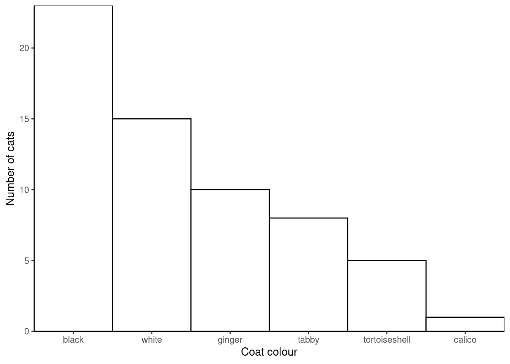
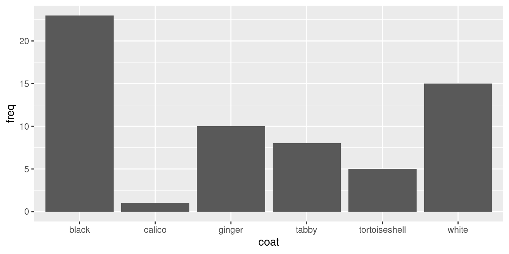
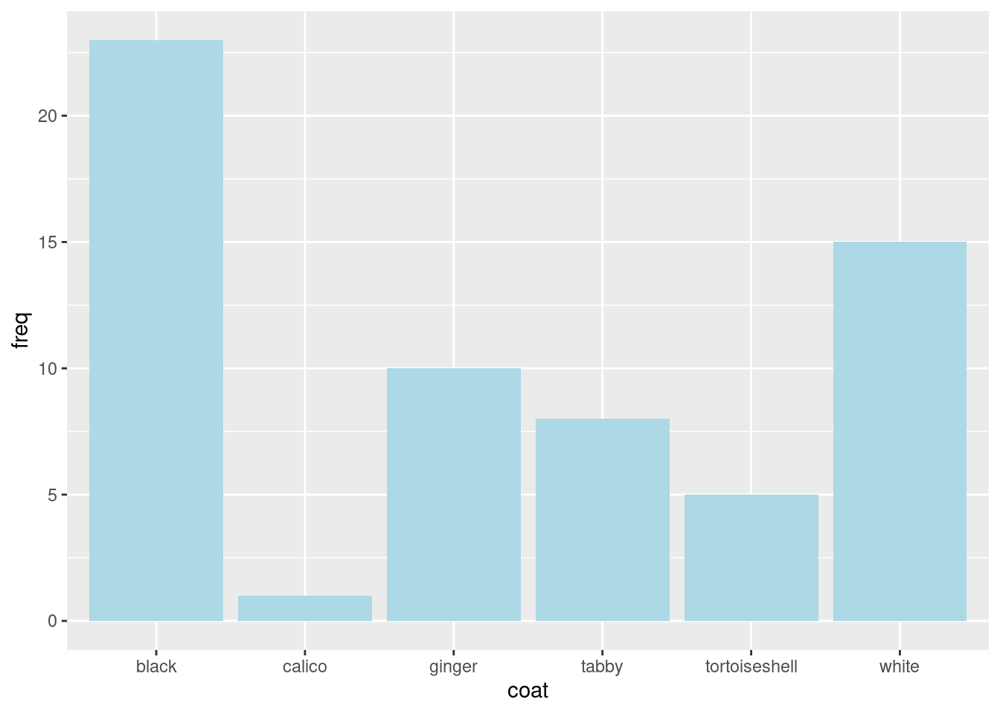
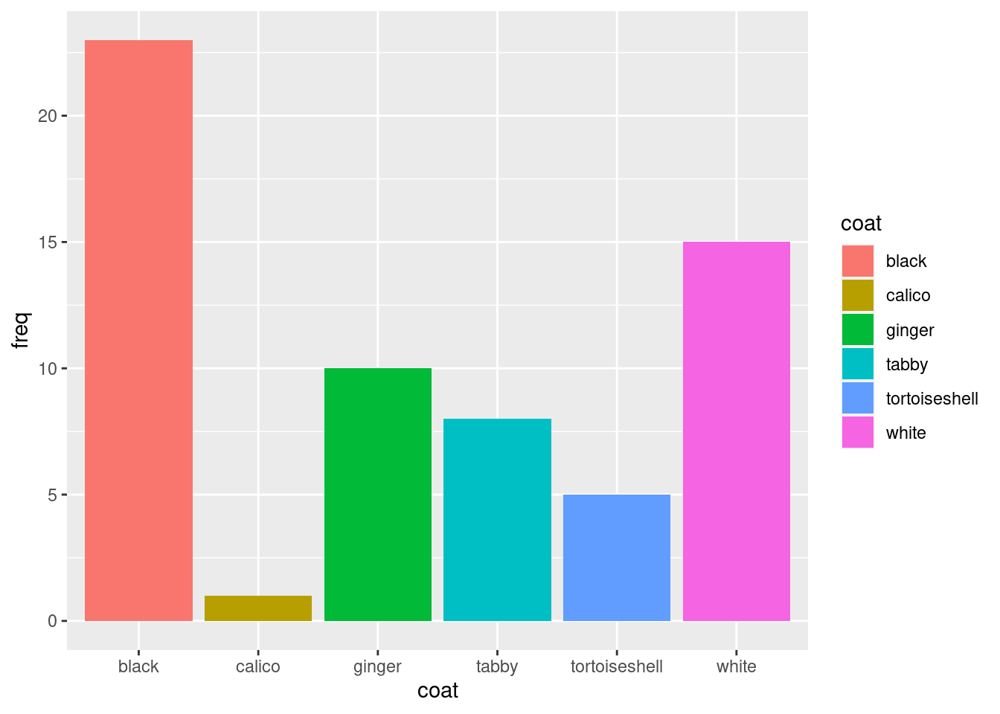
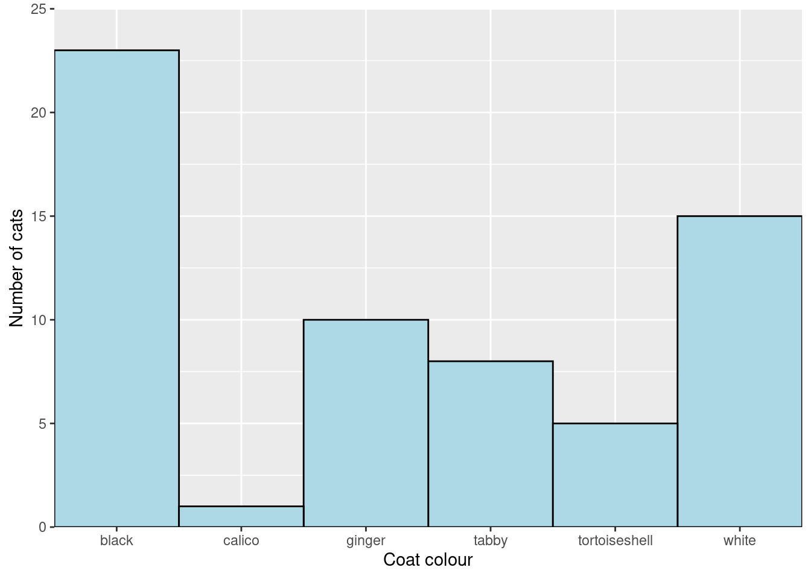
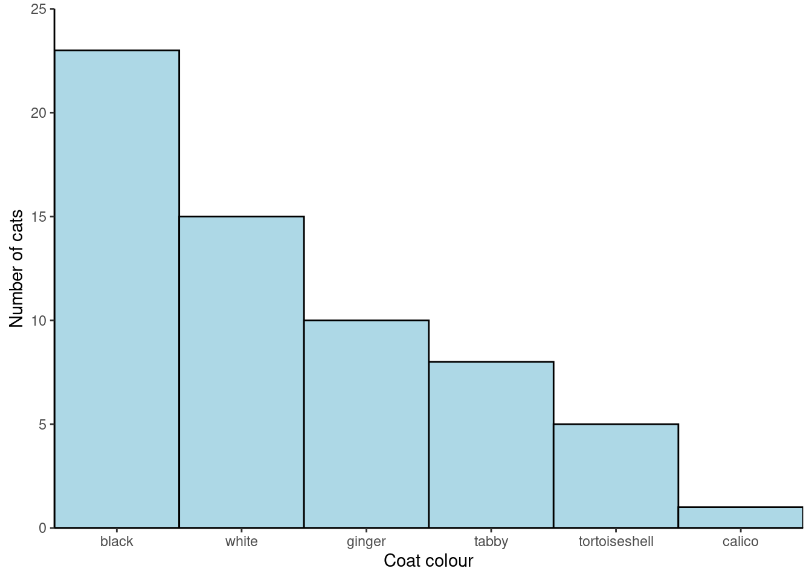

| Coat colour | No. cats |
|---|---|
| black | 23 |
| white | 15 |
| tabby | 8 |
| ginger | 10 |
| tortoiseshell | 5 |
| calico | 1 |
Week 7: Introduction to RStudio and your first graphs
Workshop
Introduction

Session overview
In this introduction you will start working with RStudio. You will typing in some data, perform some calculations on it and plot it.
Philosophy
Workshops are not a test. It is expected that you often don’t know how to start, make a lot of mistakes and need help. It is expected that you are familiar with independent study content before the workshop. However, you need not remember or understand every detail as the workshop should build and consolidate your understanding. Tips
- don’t worry about making mistakes
- don’t let what you can not do interfere with what you can do
- discussing code with your neighbours will help
- look things up in the independent study material
- look things up in your own code from earlier workshops
- there are no stupid questions
Key
These four symbols are used at the beginning of each instruction so you know where to carry out the instruction.
 Something you need to do on your computer. It may be opening programs or documents or locating a file.
Something you need to do on your computer. It may be opening programs or documents or locating a file.
 Something you should do in RStudio. It will often be typing a command or using the menus but might also be creating folders, locating or moving files.
Something you should do in RStudio. It will often be typing a command or using the menus but might also be creating folders, locating or moving files.
 Something you should do in your browser on the internet. It may be searching for information, going to the VLE or downloading a file.
Something you should do in your browser on the internet. It may be searching for information, going to the VLE or downloading a file.
 A question for you to think about and answer. Record your answers in your script for future reference.
A question for you to think about and answer. Record your answers in your script for future reference.
Getting started
Start RStudio from the Start menu.
Go the Files tab in the lower right pane and click on the ... on the right. This will open a “Go to folder” window. Navigate to a place on your computer where you keep your work. Click Open.
Also on the Files tab click on New Folder. Type “data-analysis-in-r” in to the box. This will be the folder that we work in throughout the Data Analysis in R part BABS1.
Make an RStudio project for this workshop by clicking on the drop-down menu on top right where it says Project: (None) and choosing New Project, then New Directory, then New Project. Name the RStudio Project ‘week-7’.
Make a new script then save it with a name like analysis.R to carry out the rest of the work.
Add a comment to the script: # Introduction to RStudio and your first graph
Exercises
🐈 Coat colour of cats
The goal
We will work with some data on the coat colour of 62 cats. You are going to type data in R, summarise and plot it
The data are as a frequency table:
You will create a figure like this:

Creating the data
Start by making a vector called coat that holds coat colours
Write the following in your script:
# coat colours
coat <- c("black", "white", "tabby", "ginger", "tortoiseshell", "calico")Remember, the shortcut for <- is Alt+- (hold the Alt key down then hit the minus key ).
Notice I have used a comment. Comment your code as much as possible!
Ensure your cursor is on the line with the command and do Control+Enter to send the command to the console to be executed.
Examine the ‘structure’ of the coat object using str()
str(coat) chr [1:6] "black" "white" "tabby" "ginger" "tortoiseshell" "calico"It’s vector of 6 character values, chr
Create a vector called freq containing the numbers of cats with each coat colour and examine it with str().
Check sum(freq) gives the answer you expect:
# the total Number of cats
sum(freq)[1] 62Packages
Commands like c(), sum(), and str() are in packages which are part the ‘base’ R system. A package is a collection of related commands. Base packages are installed automatically when you install R.
Other packages, such as ggplot2 Wickham (2016) need to be installed once and then loaded each session. ggplot2 is one of the tidyverse Wickham et al. (2019) packages.
Important
If you are working on a University computer (or the VDS) you do not need to install tidyverse.
If you are working on your own computer or using RStudio cloud you do need to install tidyverse.
To install a package:
Go the Packages tab on the lower right pane. Click Install and type tidyverse into the box that appears.
Wait until you get the prompt back. It will take a few moments, be patient!
To use a package which is installed you have to load it with the library() function. You will need to do this whether you are working on your own computer or on a University computer
Load the tidyverse:
library(tidyverse)You will likely be warned of some function name conflicts but these will not be a problem for you.
Plotting the data with ggplot()
ggplot() takes a dataframe for an argument
We can make a dataframe of the two vectors, coat and freq usinf the data.frame() function.
Make a dataframe called coat_data
coat_data <- data.frame(coat, freq)n was made into a factor (a categorical variable) because there are only 6 values and I want to make a bar plot.
Check the structure of coat_data
Click on coat_data in the Environment to open a spreadsheet-like view of it.
A barplot
Create a simple barplot using ggplot like this:
ggplot(data = coat_data, aes(x = coat, y = freq)) +
geom_col()
ggplot() alone creates a blank plot.
ggplot(data = coat_data) looks the same.
aes() gives the ‘Aesthetic mappings’. How variables (columns) are mapped to visual properties (aesthetics) e.g., axes, colour, shapes.
Thus…
ggplot(data = coat_data, aes(x = coat, y = freq)) produces a plot with axes
geom_col A ‘Geom’ (Geometric object) gives the visual representations of the data: points, lines, bars, boxplots etc.
Note that ggplot2 is the name of the package and ggplot() is its most important command.
Using the help manual
‘Arguments’ can be added to the geom_col() command inside the brackets.
Commands do something and their arguments (in brackets) and can specify:
- what object to do it to
- how exactly to do it
Many arguments have defaults so you don’t always need to supply them.
Open the manual page for geom_col() using:
?geom_colThe manual page has several sections.
- Description an overview of what the command does
- Usage lists arguments
- form: argument name = default value
- some arguments MUST be supplied others have defaults
...means etc and includes arguments that can be passed to many ‘geoms’
- form: argument name = default value
- Arguments gives the detail about the arguments
- Details describes how the command works in more detail
- Value gives the output of the command
- Don’t be too perturbed by not fully understanding the information
Customising the plot
Bar colour
Change the fill of the bars using fill:
ggplot(data = coat_data, aes(x = coat, y = freq)) +
geom_col(fill = "lightblue")
Colours can be given by their name, “lightblue” or code, “#ADD8E6”.
Change the bars to a colour you like.
fill is one of the arguments covered by .... fill is an ‘aesthetic’. If you look for ... in the list of arguments you will see it says:
Other arguments passed on to layer(). These are often aesthetics, used to set an aesthetic to a fixed value, like colour = “red” or size = 3. They may also be parameters to the paired geom/stat.
We just set the `fill` aesthetic to a fixed value.
Further down the manual, there is a section on Aesthetics which lists those understood by geom_col()
We can set (map) the fill aesthetic to a fixed colour inside geom_col() or map it to a variable from the dataframe inside the aes() instead. This means the colour will be different for different values in that variable.
Map the fill aesthetic to the coat variable:
ggplot(data = coat_data, aes(x = coat, y = freq, fill = coat)) +
geom_col()
Note that we have taken fill = "lightblue" out of the geom_col() and instead put fill = coat in the aes().
Use the manual to put the bars next to each other. Look for the argument that will mean there is no space between the bars.

Use the manual to change the colour of the lines around each bar to black.

Changing the axes
We can make changes to the axes using:
- Changes to a discrete x axis:
scale_x_discrete() - Changes to a continuous y axis:
scale_y_continuous()
ggplot automatically extends the axes slightly. You can turn this behaviour off with the expand argument in scale_x_discrete() and scale_y_continuous().1
Remove the gap between the axes and the data:
ggplot(data = coat_data, aes(x = coat, y = freq)) +
geom_col(fill = "lightblue",
width = 1,
colour = "black") +
scale_x_discrete(expand = c(0, 0)) +
scale_y_continuous(expand = c(0, 0)) 
Each ‘layer’ is added to the ggplot() command with a +
Top Tip
Make your code easier to read by using white space and new lines
- put spaces around
=,->and after, - use a newline after every comma in a command with lots of arguments
Look up scale_x_discrete in the manual and work out how to change the axis title from “coat” to “Coat colour”. Also change the y-axis title.

I would prefer to see the y-axis extend a little beyond the data and we can change the axis “limits” in the scale_y_continuous()
ggplot(data = coat_data, aes(x = coat, y = freq)) +
geom_col(fill = "lightblue",
width = 1,
colour = "black") +
scale_x_discrete(expand = c(0, 0),
name = "Coat colour") +
scale_y_continuous(expand = c(0, 0),
name = "Number of cats",
limits = c(0, 25)) 
Getting rid of the grey background
The grey grid background is useful for examining plots on a screen but for a report of publication you will want a more scientific style. Every aspect of the “theme” of a plot - the non-data elements such as fonts, background colours, axis line colours etc - can be controlled individually2 but there are some handy built in themes that apply several changes at once. One of these is theme_classic()
Add theme_classic() to the plot:
ggplot(data = coat_data, aes(x = coat, y = freq)) +
geom_col(width = 1,
colour = "black",
fill = "lightblue") +
scale_x_discrete(expand = c(0, 0),
name = "Coat colour") +
scale_y_continuous(expand = c(0, 0),
name = "Number of cats",
limits = c(0, 25)) +
theme_classic()
Changing the order of bars
The default ordering of a categorical variable like coat is alphabetical. Often we want to change the order. For example, you might want a “Control” on the left or the categories might have an inherent order (e.g., small, medium and large). We can alter (mutate) the coat variable using fct_relevel().
Make “white” the first category:
coat_data <- coat_data |>
mutate(coat = fct_relevel(coat, "white"))
The pipe
|>
|> is called the “pipe”. A keyboard shortcut is Control+Shift+M
The pipe puts the output of one command (one the left) as input to another command (on the right). It can be read as “and then”. You will more about it next week.
Now plot again.

If you wanted white and then ginger you would do fct_relevel(coat, c("white", "ginger")
We can also order the categories by the values in another variable by using reorder() in the plot code.
Reorder the categories in coat by the the value in freq:
ggplot(data = coat_data,
aes(x = reorder(coat, freq, decreasing = TRUE),
y = freq)) +
geom_col(width = 1,
colour = "black",
fill = "lightblue") +
scale_x_discrete(expand = c(0, 0),
name = "Coat colour") +
scale_y_continuous(expand = c(0, 0),
name = "Number of cats",
limits = c(0, 25)) +
theme_classic()
You’re finished!
🥳 Well Done! 🎉

Independent study following the workshop
The Code file
These contain all the code needed in the workshop even where it is not visible on the webpage.
The workshop.qmd file is the file I use to compile the practical. Qmd stands for Quarto markdown. It allows code and ordinary text to be interweaved to produce well-formatted reports including webpages. Right-click on the link and choose Save-As to download. You will be able to open the Rmd file in RStudio. Alternatively, View in Browser.Coding and thinking answers are marked with #---CODING ANSWER--- and #---THINKING ANSWER---
Pages made with Quarto (Allaire et al. 2022)
References
Allaire, J. J., Charles Teague, Carlos Scheidegger, Yihui Xie, and Christophe Dervieux. 2022. Quarto. https://doi.org/10.5281/zenodo.5960048.
Wickham, Hadley. 2016. “Ggplot2: Elegant Graphics for Data Analysis.” https://ggplot2.tidyverse.org.
Wickham, Hadley, Mara Averick, Jennifer Bryan, Winston Chang, Lucy D’Agostino McGowan, Romain François, Garrett Grolemund, et al. 2019. “Welcome to the Tidyverse” 4: 1686. https://doi.org/10.21105/joss.01686.
Footnotes
There are also
scale_x_continous()andscale_y_discrete()functions when you have those types of variable↩︎